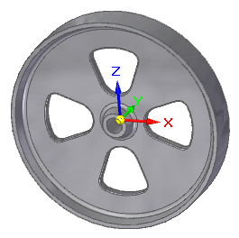
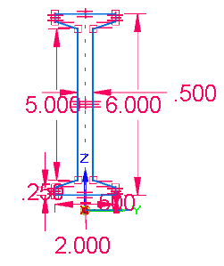
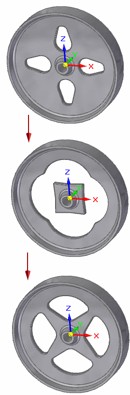

Reduce the weight of a part by goal seeking
You can apply the Goal Seek command to a model to solve an engineering problem involving mass, volume, or surface area. For example, you may need to design a part that is below a specific target weight or reduce the weight of an existing part by an additional amount.
The current weight of this part is 7.632 lbm. The goal is to reduce the weight (mass) by at least 1 lbm. To achieve that goal, you want to allow the height or the angle of the cutouts to change to reduce the surface area (and therefore the mass) of the part.

Mass is a variable driven by the physical properties of the part. The Height and Angle variables are based on driving dimensions in the profile sketch of the base part.

-
Choose Inspect tab→Evaluate group→Goal Seek
 .
. -
On the Goal Seek command bar, do the following to find the first solution:
-
From the Goal list, select Mass as the variable that you want to calculate.
The current mass value, as defined in the Physical Properties dialog box for the part, is displayed on the command bar.
-
In the Target box, type the value (but not the units) that you want the Goal to attain and press the Tab key.
The units of the Target value must match the units of the selected Goal variable.
Example:For the first solution, enter 6.5 as the target weight. The units (lbm) are entered automatically when you press the Tab key.
-
From the Variable list, select the first variable that you want to change.
Example:For the first solution, select Height.
-
Click the green check mark to begin.
As goal seeking evaluates the solution, changes to the geometry are shown in the graphics window. When it finds the best solution, the model is updated and the process duration and number of iterations are displayed on the status bar.

-
-
Find another solution for the goal by changing the Target value and Variable options on the command bar, and then selecting Accept to reprocess the solution.
Example:Change the Target weight value, for example, to 6.000.
Select Angle as the variable to change.
The Variable Table updates with the new value for the variable you selected to change.
Tip:-
If you do not like the calculated solution, you can use the Undo command to undo it.
-
To change the process duration or number of iterations, click the Options button on the command bar and then modify the settings in the Goal Seek Options dialog box.
-